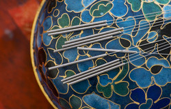

CR8 Health · Boca Raton
Acupuncture and Chinese Medicine in Delray Beach
- DAOM
- NCCAOM Board Certified
- Dry Needling Certified
- FL License AP3879

CR8 Health · Boca Raton

Meet your practitioner
At CR8 Health, acupuncture and Chinese medicine are led by Dr. Jonathan M. Fields, DAOM, L.Ac., who brings a blend of classical training and modern clinical reasoning to the care team. His background includes a doctorate and master's degree in Oriental medicine, study in China, certification in dry needling and advanced training in functional medicine and blood chemistry. He works collaboratively, sharing findings with the rest of your care team when you ask him to.
Most health problems have more than one driver. Pain may be tied to sleep, sleep to stress, stress to blood sugar swings. At CR8 Health, acupuncture sits alongside functional medicine and other services so the plan can address several contributors at once. When you agree, Dr. Fields shares his findings with the clinicians you already see.
Acupuncture is one of the most studied complementary therapies. A large individual patient data meta analysis by Vickers and colleagues (2018) pooled results from about 20,000 patients across trials of chronic pain. It found acupuncture performed better than both sham and no acupuncture controls for back and neck pain, osteoarthritis, chronic headache and shoulder pain, and the effects persisted over time with only a small decline.
The National Center for Complementary and Integrative Health summarizes evidence for low back pain, neck pain, knee osteoarthritis and headache, and notes that acupuncture is generally safe when performed by a qualified practitioner using sterile needles.
Research also continues on how acupuncture works. Studies have shown that needle manipulation interacts with connective tissue (Langevin et al.), and imaging work has described fluid filled interstitial spaces within connective tissue (Benias et al.). Neural signaling, including mechanisms described by gate control theory, is also thought to play a role. These are areas of active study rather than settled explanations.

Intake. Dr. Fields reviews your history, medications and goals, and may look at recent lab work.
Assessment. Chinese medicine assessment includes pulse and tongue observation. Orthopedic and palpation exams help locate sources of pain.
Treatment. Needles are placed and usually left for 20 to 30 minutes while you rest. Heat, electrical stimulation, cupping or gua sha may be added.
Plan. You leave with a proposed schedule, home suggestions and clear goals for the next visit.
Learn more
For readers who want the details: the research, the history and the reasoning behind how we work.
Musculoskeletal pain. Back, neck, shoulder and knee pain are among the best studied uses.
Headache and migraine. Research suggests acupuncture may reduce headache frequency for some people.
Stress and sleep. Many people find sessions relaxing, and acupuncture is often included in plans for stress and sleep.
Digestive complaints. Nausea has been studied most. Bloating and irregularity are often addressed with acupuncture plus diet and herbs.
Women's health. Menstrual pain and menopausal symptoms are common reasons for visits, alongside care from a gynecologist.
Recovery support. Athletes and active adults often use acupuncture with training and physical therapy.
Chinese medicine is a whole system. Alongside acupuncture, Dr. Fields may recommend Chinese herbal medicine, dietary guidance, cupping, gua sha and qigong. Herbal formulas are reviewed for interactions with your medications.
CR8 Health values measurable goals. Before treatment, you and Dr. Fields agree on what to track: a pain score, nights of good sleep, headache days per month, range of motion or a specific activity. Progress is reviewed at regular intervals. If results are not meaningful after a reasonable trial, the plan changes.
For problems such as fatigue, digestive symptoms or hormonal changes, acupuncture is often combined with functional medicine. Labs and nutrition address underlying factors while acupuncture supports symptom relief and relaxation.
Serious complications are rare with a trained, licensed practitioner. Mild soreness, minor bruising or brief tiredness can occur. Tell us if you take blood thinners, have a pacemaker, are pregnant or have a bleeding disorder. Acupuncture does not replace medical evaluation of new or worsening symptoms.
Dr. Fields holds a Doctor of Acupuncture and Oriental Medicine degree and a master's degree in Oriental medicine. He is licensed in Florida (AP3879) and NCCAOM Board Certified, and is certified in dry needling. His training in the United States and China, including the Shaolin Temple, is complemented by coursework in functional medicine and blood chemistry.
Some insurance plans include acupuncture benefits. Medicare covers acupuncture for chronic low back pain under specific circumstances and with qualified providers. Call our office to ask about your situation before your first visit.
Acute problems may respond in a few visits. Long standing conditions usually take a series, often weekly at first and then spaced further apart as you improve. Many patients move to occasional maintenance visits.
Eat a light meal beforehand. Wear loose clothing that can be rolled up above the elbows and knees. Bring a list of medications and supplements and any recent lab results. Write down the two or three outcomes that matter most to you.
In electroacupuncture, a small device sends a mild electrical current between pairs of needles. It produces a tapping or buzzing sensation and is commonly used for musculoskeletal pain. Research on electroacupuncture is extensive in pain and recovery settings. It is not used in people with pacemakers or certain implanted devices.
Many patients describe feeling calm and heavy during and after a session. Researchers study how acupuncture may influence the autonomic nervous system, which governs heart rate, digestion and the stress response. While the mechanisms are still being clarified, the relaxation many people feel is a practical benefit for those dealing with chronic stress.
What is the goal? A measurable outcome keeps treatment focused.
What else contributes? Sleep, nutrition, workload and activity affect most conditions.
Who else is involved? We coordinate with your physicians, physical therapists and other providers when you ask us to.
When do we reassess? Typically after six to eight visits.
Our Delray Beach location is convenient for patients across south Palm Beach County, from Boynton Beach to Boca Raton. We aim for care that is thorough and efficient, and we schedule visits with busy weeks in mind.
For people with migraine or tension headache, a headache diary is one of the most useful tools. Record the date, duration, intensity, possible triggers and medication use. Comparing a month before treatment with months during treatment gives an objective view of change and helps your neurologist and our team make decisions together.
"It only works if you believe in it." Trials comparing acupuncture with sham procedures suggest effects beyond expectation for some pain conditions, though expectation plays a role in all treatments.
"The needles are like injection needles." Acupuncture needles are solid and far thinner than hypodermic needles.
CR8 Health has locations in Boca Raton and Delray Beach. Your records, plan and progress notes follow you, so the team can see the full picture regardless of where you are seen.
Honest reporting of what is and is not changing, a willingness to try the home steps in your plan, and an updated medication list at each visit. In return, we commit to clear explanations, measurable goals and coordination with your other providers.
Most people feel little more than a brief pinch, followed by a dull ache or warmth. Many relax or fall asleep.
It depends on the condition. A typical starting plan is six to eight weekly visits, then reassessment.
No. Every needle is sterile, single use and disposed of after treatment.
Yes. Acupuncture often complements other care.
It can be, with modifications. Tell us if you are pregnant.
CR8 Health sees patients at 8234 Glades Rd in Boca Raton, with a care team that brings integrative and conventional perspectives together under one roof. Patients come to us from Boca Raton, Delray Beach, Highland Beach and the western communities. If you are not sure which service fits, call and our team will help you choose a starting point, whether that is an acupuncture visit, a functional medicine consultation or a combination. Bring a list of medications and supplements, recent lab work if you have it and a short summary of your health goals. We will explain costs and options before anything is scheduled, so there are no surprises.
Patients come to us from Parkland, Margate, Coral Springs, Tamarac, Coconut Creek, Sunrise, Plantation and Pompano Beach.